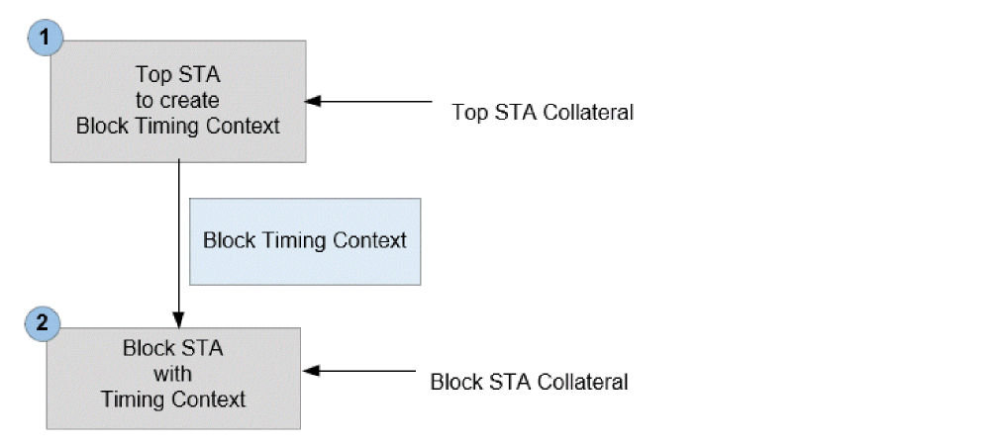

Hierarchical Timing Context Analysis Flow
Timing analysis/closure with Timing Context is a two-step flow -
Figure -123 Hierarchical Timing Analysis - Flow

STEP1: Timing Context Generation from Top STA
The first step is to create the Timing Context of lower-level submodules from Top level STA environment. This can be done either from Top Flat or from Top+BM analysis. Once the top level design is fully loaded and ready to perform timing analysis, use the write_timing_context command to create Timing Context constraints of the required sub-module.
write_timing_context command triggers the update_timing -full state and design state after update_timing -full vs write_timing_context remains the same. Hence, you can replace update_timing -full with the write_timing_context command in the top level scripts and continue to generate reports after context creation. read_lib
read_verilog
set_top_module top
read_spef
read_sdc
write_timing_context context.db -module block
STEP2: Block STA with Timing Context
The second step is to perform block STA with Timing Context generated in step1. The timing Context should be read after reading all the block design collaterals, including the block constraints. You can use the update_timing command after reading the context followed by the reporting commands.
read_lib
read_verilog
set_top_module block
read_spef
read_sdc
read_timing_context context.db
update_timing
Return to top